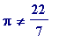
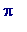
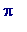

Some preliminary comments
In Jan 2004, when I conceived the idea of giving a transcendental numbers talk, I naively thought I would cover X, Y, and Z. However as soon as I started to make a sketch of what I would do, that sketch got longer, and longer,
and quickly it began to dawn on me that it would end up like my (Austria) August 2001 'Fermat's little theorem' homage talk - in which I also used Maple - marking the 400th anniversary of Fermat's birth. In Austria all that I managed was to skim the surface of my prepared material, and invite interested readers to access the complete talk at my web site. On this occasion that too is what I intend to do.
A word about
history
(it's in my title after all!). Of course I am not a historian of Mathematics, so you won't find scholarly history here. I believe though that everyone would agree that the (difficult!) subject of transcendence didn't really begin until 1844, in the sense that no one proved the transcendence of any number until that year. I do attempt to sketch the scene prior to 1844, possibly not accurately. For example, I had always believed it was Euler who introduced the concept of a transcendental
number
, as opposed to a transcendental
function
. There is an immense difference in mathematical difficulty between those two: it is almost completely trivial to prove (e.g.) that
is a transcendental
function
, but an entirely different matter to prove (as Hermite first did in 1873) that
e
is a transcendental
number
. However, while I was preparing this talk it was brought to my attention by some correspondents (see the transcendental numbers corner of my web site) that possibly Leibnitz knew of the concept of a transcendental number, and speculated that
 could be transcendental (of course it is one matter to speculate, but an entirely different one to prove...)
could be transcendental (of course it is one matter to speculate, but an entirely different one to prove...)
For whom am I writing ? Essentially I am writing for secondary school teachers of Mathematics , some of whom might wish to adapt some of what I have written for their pupils, or perhaps even direct them to this work. I have included some material that could be presented to school pupils, for example a way of seeing that Liouville's decimal number is transcendental without appealing to his approximation theorem, or a beautiful demonstration of the fact that  , which provides much fodder for further guided speculation.
I hope, too, that even experts might find something of interest here, if only my C. A. Rogers, K. F. Roth, R. Rado, and T. Schneider anecdotes, or the reference to my corrected version of the Gelfond proof [in the
Gelfond-Linnik
book] of the real case of Hilbert's seventh problem, which I included in my Manchester university course on transcendental numbers in 1972-73. My Manchester 1972-73 course had complete details on Liouville's 1844 transcendence proof, proofs of the irrationality of integral powers of
e
, the transcendence of
e
(Hermite), the irrationality of
 and
, the transcendence of

(Lindemann), Gelfond's solution of Hilbert's seventh problem, Gelfond's earlier solution of a special case of that problem, etc. I also included in my Manchester lectures a much corrected version of the proof from the extraordinary book by Gelfond and Linnik -
Elementary Methods in Analytic Number Theory
- of the real case of Hilbert's seventh problem ('elementary' in the classical sense of making no use whatever of Complex Analysis).
and
, the transcendence of

(Lindemann), Gelfond's solution of Hilbert's seventh problem, Gelfond's earlier solution of a special case of that problem, etc. I also included in my Manchester lectures a much corrected version of the proof from the extraordinary book by Gelfond and Linnik -
Elementary Methods in Analytic Number Theory
- of the real case of Hilbert's seventh problem ('elementary' in the classical sense of making no use whatever of Complex Analysis).
Not all my Dublin audience, or later web readers, will be Maple users, and, on the web, will be reading the html version of this active Maple worksheet, and thus I will occasionally include some slightly tangential material to impress on non-users the power of using Maple.
Reluctantly I have omitted much material (a novice reader should understand that I have only scratched the surface, and even then not deeply), and have even scrapped substantial material that I had begun (e.g. Mahler's A-, S-, T-, U- classification of transcendental numbers, for I could see no end to where I could draw an eventual line). I also began a substantial section on Special Functions (exponential, trigonometric, elliptic, elliptic modular, gamma, beta, zeta), but have entirely removed it in an attempt to reduce the eventual size. Because I could not count on a general reader knowing about Algebraic Number Theory, nor about p -adic analysis, nor about ... then I have also omitted much further work: e.g. I have had to omit all reference to Siegel's E-functions work, and to (e.g.) Shidlovskii, and Feldman. I also made a reluctant decision not to mention any work of any of those who got attracted into transcendence after Baker began his mid 1960's revolution (if I were to start, where would I finish?).